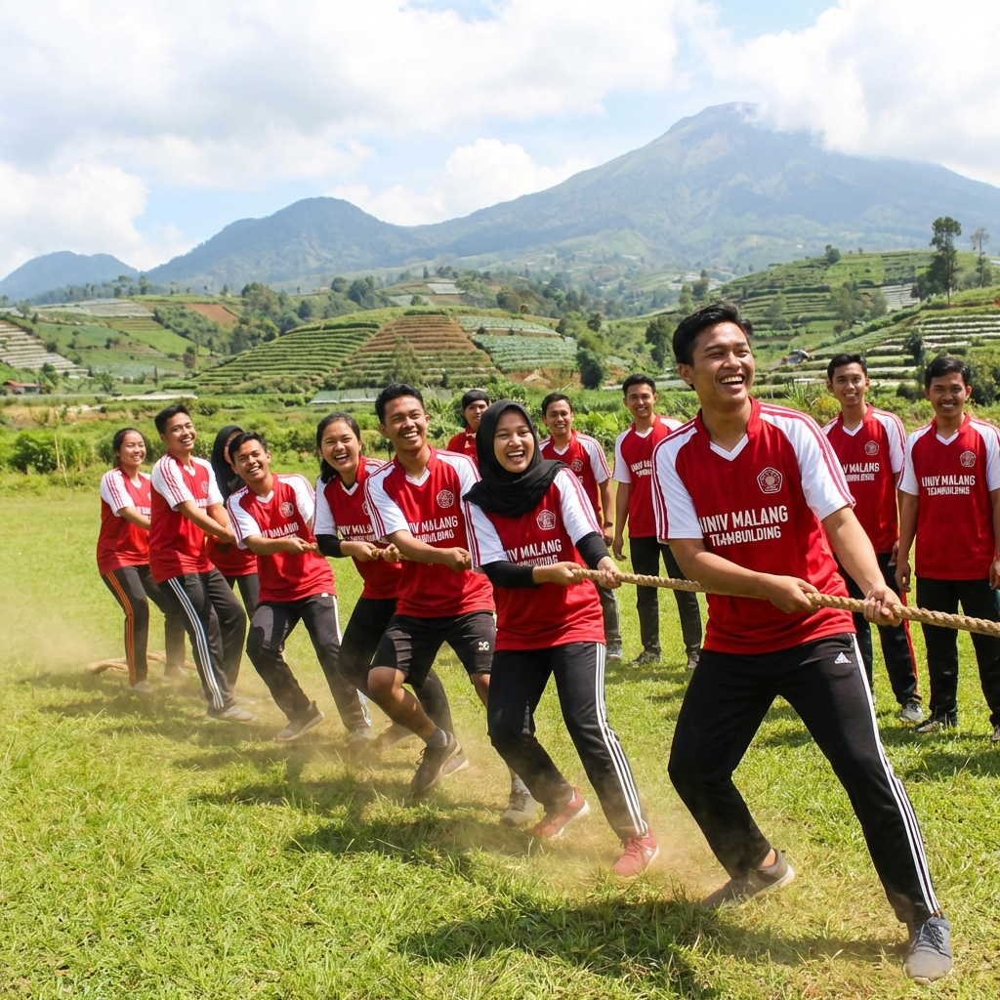
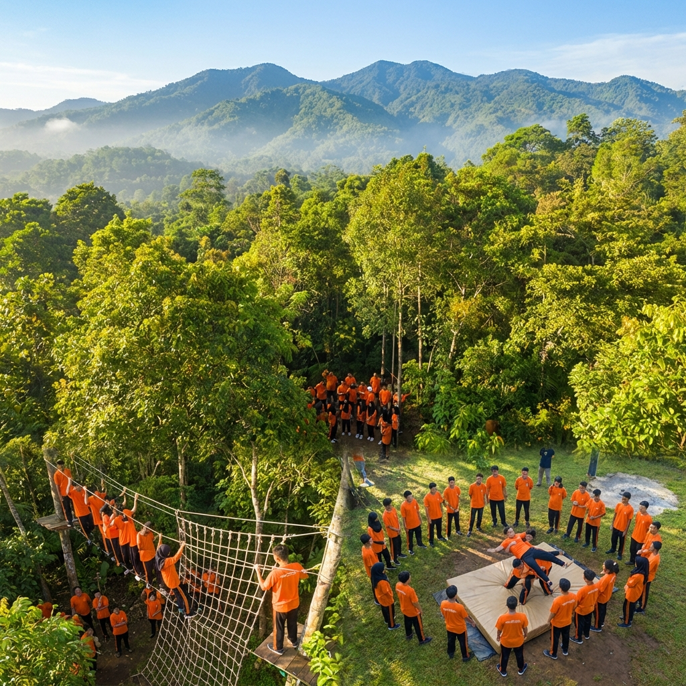

Memilih lokasi outbound yang tepat menjadi salah satu kunci keberhasilan kegiatan LDKS (Latihan Dasar Kepemimpinan Siswa). Malang dan kawasan Batu menawarkan beragam pilihan venue outbound dengan keunggulan masing-masing, mulai dari hutan pinus yang sejuk, area persawahan yang asri, hingga venue glamping modern dengan fasilitas lengkap. Setiap lokasi memiliki karakteristik unik yang bisa disesuaikan dengan tema dan kebutuhan kegiatan LDKS sekolah Anda.
Wilayah Malang Raya dikenal dengan iklim yang sejuk dan pemandangan alam yang memesona. Terletak di ketinggian 440-667 meter di atas permukaan laut, suhu udara di Malang berkisar antara 18-28 derajat Celsius, menjadikannya sangat nyaman untuk kegiatan outdoor sepanjang hari. Dikelilingi oleh pegunungan Arjuno, Welirang, Kawi, dan Semeru, kawasan ini menyediakan backdrop alam yang spektakuler untuk setiap kegiatan outbound.
Kawasan Batu: Surga Outbound di Malang Raya
Kota Batu, yang terletak sekitar 20 km di sebelah barat Kota Malang, menjadi destinasi utama untuk kegiatan outbound di Jawa Timur. Dengan ketinggian hingga 800 meter di atas permukaan laut, Batu menawarkan udara yang sangat sejuk dan pemandangan pegunungan yang menakjubkan. Terdapat banyak venue outbound profesional di kawasan ini yang sudah berpengalaman melayani kegiatan LDKS dari berbagai sekolah.
Kawasan Coban Rondo dan Sekitarnya
Kawasan Coban Rondo di Pujon menjadi salah satu lokasi favorit untuk outbound LDKS. Dikelilingi oleh hutan lindung yang lebat dan air terjun yang indah, area ini memberikan suasana petualangan yang autentik bagi peserta. Beberapa venue outbound di kawasan ini menyediakan fasilitas high rope course, flying fox, dan area camping yang sudah terstandar dengan baik. Udara yang sejuk dengan suhu berkisar 16-22 derajat Celsius membuat kegiatan outdoor bisa berlangsung nyaman sepanjang hari.
Kawasan Selecta dan Songgoriti
Selecta dan Songgoriti merupakan kawasan wisata pegunungan yang sudah terkenal sejak era kolonial Belanda. Area ini menawarkan kombinasi antara keindahan alam, fasilitas yang lengkap, dan aksesibilitas yang mudah. Beberapa resort dan hotel di kawasan ini memiliki area outbound sendiri yang bisa digunakan untuk kegiatan LDKS. Keunggulan utama lokasi ini adalah ketersediaan akomodasi yang bervariasi, mulai dari kamar hotel hingga area camping, sehingga sangat cocok untuk program LDKS yang berlangsung lebih dari satu hari.
"Lokasi outbound yang tepat bukan hanya tentang pemandangan yang indah, tetapi juga tentang keamanan, aksesibilitas, dan kelengkapan fasilitas yang mendukung tercapainya tujuan kegiatan LDKS secara optimal." — Tim Surveyor Outbound LDKS Malang
Hutan Pinus: Setting Outbound yang Menakjubkan
Malang Raya memiliki banyak kawasan hutan pinus yang menjadi lokasi outbound populer. Deretan pohon pinus yang menjulang tinggi dengan lantai hutan yang ditumbuhi rumput hijau menciptakan atmosfer yang magis untuk kegiatan outdoor. Beberapa hutan pinus yang sering digunakan untuk outbound LDKS antara lain berada di kawasan Batu, Pujon, dan Tumpang.
Keunggulan hutan pinus sebagai lokasi outbound adalah suasana yang tenang dan teduh, udara yang sangat segar, serta kontur tanah yang bervariasi yang bisa dimanfaatkan untuk berbagai jenis tantangan outbound. Area hutan pinus juga sangat instagramable, sehingga peserta LDKS bisa mendapatkan dokumentasi kegiatan yang menarik dan berkesan untuk kenang-kenangan.
Area Persawahan dan Pedesaan
Bagi sekolah yang menginginkan suasana yang berbeda, area persawahan dan pedesaan di sekitar Malang juga menjadi pilihan menarik untuk outbound LDKS. Pemandangan sawah yang hijau membentang dengan latar belakang pegunungan memberikan ketenangan dan keindahan alam yang menyegarkan. Beberapa venue outbound di kawasan pedesaan menawarkan konsep back-to-nature yang mengajak siswa lebih dekat dengan kehidupan masyarakat desa.
Kegiatan outbound di area persawahan biasanya dikombinasikan dengan program pendidikan lingkungan dan kearifan lokal, seperti belajar bertani, menanam padi, dan mengenal ekosistem sawah. Kombinasi antara outbound leadership training dengan pendidikan lingkungan hidup memberikan pengalaman belajar yang holistik dan berkesan bagi peserta LDKS.

Venue Glamping Modern
Tren glamping (glamorous camping) yang sedang populer di Indonesia juga hadir di kawasan Malang. Beberapa venue glamping modern menyediakan area outbound yang dilengkapi dengan fasilitas premium. Peserta bisa menikmati pengalaman camping yang tetap nyaman dengan tenda-tenda bergaya hotel, kamar mandi bersih, dan fasilitas dining area yang lengkap.
Venue glamping cocok untuk program LDKS yang ingin memberikan pengalaman berkemah tanpa mengorbankan kenyamanan peserta. Fasilitas yang lebih baik juga memudahkan pengelolaan logistik kegiatan, terutama untuk program LDKS dengan peserta dalam jumlah besar. Selain itu, suasana glamping yang aesthetic dan instagramable menjadi nilai tambah yang disukai oleh siswa generasi Z.
Area Sungai dan Air Terjun
Kawasan Malang kaya akan sumber air berupa sungai dan air terjun yang bisa dimanfaatkan untuk kegiatan outbound berbasis air. Beberapa sungai di kawasan ini memiliki aliran yang cukup menantang untuk kegiatan river tubing dan body rafting, sementara area sekitar air terjun menyediakan suasana yang dramatis dan segar untuk kegiatan outbound darat.
Kegiatan outbound berbasis air sangat digemari oleh siswa karena menawarkan sensasi petualangan yang berbeda dan menyegarkan. Namun, pastikan vendor outbound yang dipilih memiliki peralatan keselamatan air yang lengkap dan petugas rescue yang berpengalaman. Keselamatan peserta harus selalu menjadi prioritas utama, terutama dalam kegiatan yang melibatkan elemen air.
Faktor Penting dalam Memilih Lokasi Outbound
Dalam memilih lokasi outbound untuk kegiatan LDKS, ada beberapa faktor penting yang perlu dipertimbangkan secara matang. Setiap faktor memiliki pengaruh signifikan terhadap kelancaran dan keberhasilan kegiatan secara keseluruhan.
Aksesibilitas dan Jarak Tempuh
Pertimbangkan jarak tempuh dari sekolah ke lokasi outbound. Waktu perjalanan yang terlalu lama bisa membuat peserta kelelahan sebelum kegiatan dimulai. Idealnya, lokasi outbound bisa dijangkau dalam waktu 1-2 jam perjalanan dari sekolah. Pastikan juga kondisi jalan menuju lokasi aman dan bisa dilalui oleh bus besar jika peserta berangkat menggunakan bus sekolah.
Kapasitas dan Luas Area
Pastikan lokasi outbound memiliki kapasitas yang memadai untuk jumlah peserta LDKS. Area kegiatan harus cukup luas agar setiap kelompok bisa melakukan aktivitas dengan leluasa tanpa saling mengganggu. Untuk kegiatan LDKS dengan peserta lebih dari 100 orang, diperlukan lokasi dengan area yang sangat luas dan beberapa pos kegiatan yang bisa digunakan secara bersamaan.

Tips Melakukan Survei Lokasi Outbound
Sebelum memutuskan lokasi outbound untuk kegiatan LDKS, sangat disarankan untuk melakukan survei langsung ke lokasi yang menjadi kandidat. Survei ini bertujuan untuk memverifikasi informasi yang diberikan oleh vendor dan memastikan lokasi benar-benar sesuai dengan kebutuhan kegiatan Anda. Ada beberapa hal yang perlu diperhatikan saat melakukan survei lokasi.
Pertama, periksa kondisi fisik area kegiatan termasuk kontur tanah, vegetasi, dan ketersediaan shade (area teduh). Kedua, inspeksi peralatan outbound yang tersedia apakah dalam kondisi layak dan terawat. Ketiga, cek fasilitas pendukung seperti toilet, musholla, dan area istirahat. Keempat, evaluasi akses darurat dan jalur evakuasi. Kelima, tanyakan tentang kebijakan terkait cuaca buruk dan rencana cadangan yang tersedia.
Jika tidak memungkinkan untuk survey langsung, mintalah vendor untuk mengirimkan video tour dan foto terbaru dari lokasi. Beberapa vendor profesional bahkan menyediakan virtual tour yang bisa diakses secara online sehingga panitia bisa melihat kondisi lokasi secara detail dari jarak jauh.

Pertanyaan yang Sering Diajukan (FAQ)
Kesimpulan
Malang dan Batu menawarkan beragam pilihan lokasi outbound terbaik untuk kegiatan LDKS siswa SMP dan SMA. Dari hutan pinus yang magis, kawasan pegunungan yang sejuk, area persawahan yang asri, hingga venue glamping modern — setiap lokasi memiliki keunggulan dan daya tarik masing-masing. Yang terpenting adalah memilih lokasi yang sesuai dengan kebutuhan, jumlah peserta, dan budget kegiatan, serta memastikan aspek keamanan menjadi prioritas utama.
Bingung memilih lokasi outbound yang tepat untuk LDKS sekolah Anda? Hubungi kami sekarang untuk konsultasi gratis dan rekomendasi lokasi terbaik sesuai kebutuhan Anda!